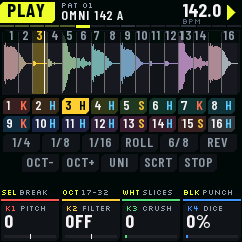
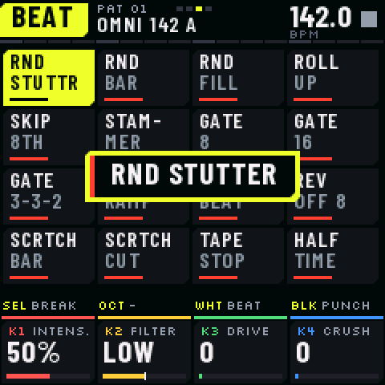
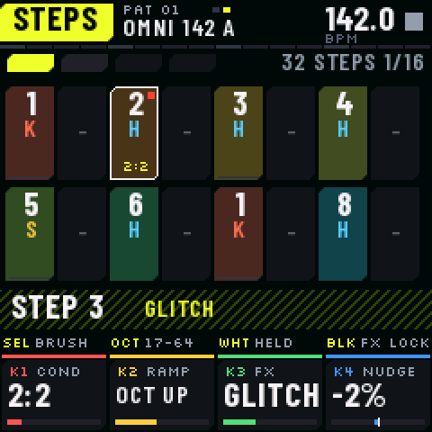
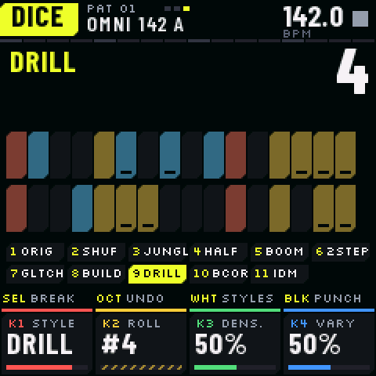
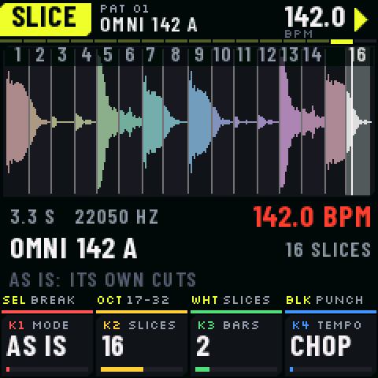
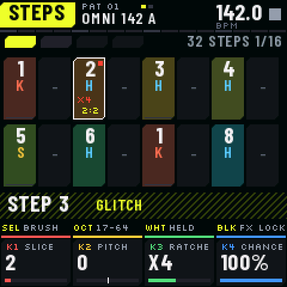
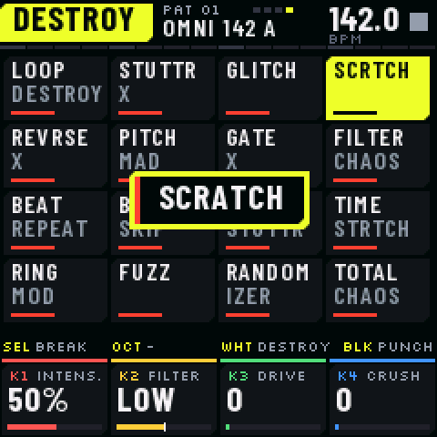
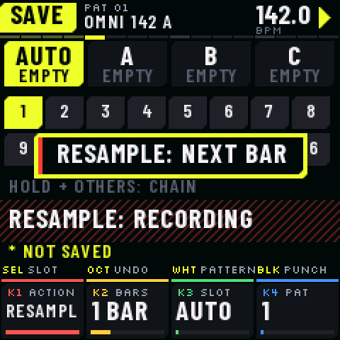
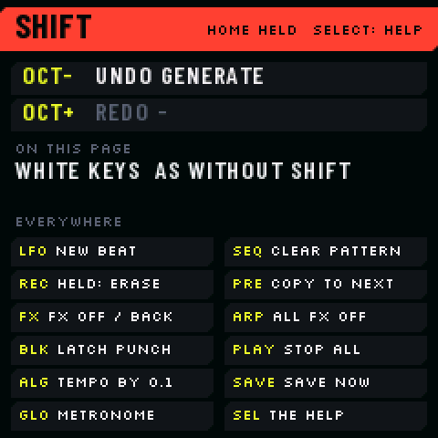

Breakbeat/Breakcore/IDM
BREAKR turns the FM-1 into a break machine. Slice any loop on its hits, sequence it on 64 steps with ratchets up to ×16, conditions and effect locks, then drill, destroy and resample it. Squarepusher-grade chaos on 27 keys. BREAKR fait du FM-1 une machine à breaks. Découpe n’importe quelle boucle sur ses frappes, séquence-la sur 64 pas avec ratchets jusqu’à ×16, conditions et verrous d’effets, puis drille-la, détruis-la et rééchantillonne-la. Le chaos à la Squarepusher sur 27 touches.
Beta. Built and checked for the FM-1 (size, memory, the update path, thousands of random sessions), not yet played on one. The official firmware goes back on at any time with M-UPGRADE. Bêta. Compilé et vérifié pour le FM-1 (taille, mémoire, mise à jour, des milliers de sessions aléatoires), pas encore joué sur un vrai. Le firmware officiel se réinstalle à tout moment avec M-UPGRADE.




Chop. Drill. Destroy. Resample.Découper. Driller. Détruire. Rééchantillonner.

Slice any breakDécoupe n’importe quel break
8 factory breaks (4 played by Omnipotard, CC0; 4 synthesized) and 8 of yours. As it is, on a grid, or on its hits; each slice knows if it is a kick, a snare or a hat.8 breaks d’usine (4 joués par Omnipotard, CC0 ; 4 synthétisés) et 8 à toi. Tel quel, en grille ou sur ses frappes ; chaque tranche sait si c’est un kick, une caisse claire ou un charleston.

64 steps, ×16 ratchets64 pas, ratchets ×16
Ratchets up to 16 hits a step with a ramp (up, down, an octave, random, fade, reverse every other), conditions (1:2 … 8:8, FIRST, PRE), chance, nudge, the break's own groove kept.Ratchets jusqu’à 16 coups par pas avec une rampe (monte, descend, une octave, hasard, fondu, envers un sur deux), conditions (1:2 … 8:8, FIRST, PRE), chance, décalage, le groove du break gardé.

32 glitch effects32 effets glitch
K-GLITCH’s two banks on the white keys: BEAT (random fills, roll up, stammer, gates, reverse beat, tape stop…) and DESTROY (loop destroy, stutter, scratch, pitch mad, time stretch, total chaos…). Hold, play, lock them on steps. A black key names its punch effect in a window.Les deux banques de K-GLITCH sur les touches blanches : BEAT (fills au hasard, roll up, stammer, gates, reverse beat, tape stop…) et DESTROY (loop destroy, stutter, scratch, pitch mad, time stretch, total chaos…). Tiens, joue, verrouille-les sur les pas. Une touche noire nomme son effet punch dans une fenêtre.
Generators and diceGénérateurs et dés
DRILL, BREAKCORE and IDM next to jungle, half time, boom bap, 2-step, glitch and build-up. The dice swap slices, reverse, roll and jump; LOCK makes the random repeat.DRILL, BREAKCORE et IDM à côté de jungle, half time, boom bap, 2-step, glitch et build-up. Les dés changent les tranches, inversent, roulent et sautent ; LOCK fait se répéter le hasard.

Resample on the FM-1Resample sur le FM-1
What comes out, effects and all, recorded for 1, 2 or 4 bars into a new break, cut on the grid and classed. Then chop it again. No computer needed.Ce qui sort, effets compris, enregistré sur 1, 2 ou 4 mesures dans un nouveau break, découpé en grille et classé. Puis redécoupe-le. Sans ordinateur.

SHIFT, undo, and it says what does whatSHIFT, annuler, et il dit quoi fait quoi
HOME held is SHIFT: a new beat, clear, erase while it plays, copy the pattern, latch an effect, FX off and back, and 16 edits of undo and redo. The screen lists what it does; the strip and the knob bar always say what every control does now.HOME tenu, c’est SHIFT : un nouveau beat, effacer, gommer pendant la lecture, copier le pattern, verrouiller un effet, couper les FX et les remettre, et 16 modifications d’annuler et rétablir. L’écran liste ce qu’il fait ; le bandeau et la barre des knobs disent toujours ce que fait chaque commande.
A recipeUne recette
SELECT a break, ALGORITHM up to 170+, PLAY.SELECT un break, ALGORITHM à 170+, PLAY.
LFO three times: GENERATE, white key 9: DRILL; again: another roll. SHIFT + OCT− takes it back.LFO trois fois : GÉNÉRER, touche blanche 9 : DRILL ; encore : un autre tirage. SHIFT + OCT− revient en arrière.
FX four times (DESTROY), hold LOOP DESTROY or STUTTER X; REC to write it on the steps.FX quatre fois (DESTROY), tiens LOOP DESTROY ou STUTTER X ; REC pour l’écrire sur les pas.
SAVE, KNOB 1 to RESAMPLE, SAVE: two bars later it is a new break. Chop it again.SAVE, KNOB 1 sur RESAMPLE, SAVE : deux mesures plus tard, c’est un nouveau break. Redécoupe-le.
Install in a minuteInstaller en une minute
From Chrome or EdgeDepuis Chrome ou Edge
Plug the FM-1 in with a USB data cable, open the installer, click Install. The package is checked before anything is written; a cut install resumes.Branche le FM-1 avec un câble USB de données, ouvre l’installeur, clique sur Installer. Le paquet est vérifié avant toute écriture ; une installation coupée reprend.
Open the installerOuvrir l’installeurWithout a browserSans navigateur
Download the repository, then INSTALL-Windows.bat, INSTALL-Mac.command or INSTALL-Linux.sh (Python 3). Rescue: hold OCT− at power-on.Télécharge le dépôt, puis INSTALL-Windows.bat, INSTALL-Mac.command ou INSTALL-Linux.sh (Python 3). Secours : OCT− maintenu à l’allumage.
Buy me a beer?Tu m’offres une bière ?
If you like what I do, think about supporting me. Every little gesture means a lot.Si tu aimes ce que je fais, pense à me soutenir. Chaque petit geste compte énormément.